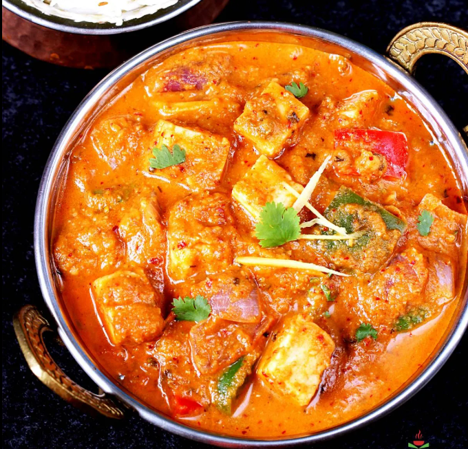

Shahi Paneer
Ingredients
- Paneer (cottage cheese) – 200-250 grams (cubed)
- Onions – 2 medium (roughly chopped)
- Tomatoes – 2 large (roughly chopped or pureed)
- Cashew nuts – 10-12
- Ginger – 1-inch piece (chopped)
- Green chili – 1 (optional, slit or chopped)
- Fresh cream – 3-4 tablespoons
Recipe
- Make the base paste
Heat 1 tsp oil in a pan. Add onions, ginger, garlic, green chili, cashews. Sauté for 4-5 mins.
Add tomatoes, cook till soft. Cool and grind to paste. - Prepare the curry
Heat butter + oil, add whole spices. Add paste, cook till oil leaves sides.
Add dry spices and cook 1 min. - Make it shahi
Add milk + water, bring to boil. Add paneer, simmer 2-3 mins. - Finish
Add cream, garam masala, optional rose/kewra water. - Serve
Garnish with coriander or cream. Serve hot.
Kadhai Paneer
Ingredients
- Paneer – 200-250 grams
- Capsicum – 1 medium
- Onion – 1 large
- Tomatoes – 2 large
- Ginger-garlic paste – 1 tbsp
- Kadhai masala – 1 tbsp
- Red chili powder – ½ tsp
- Coriander powder – 1 tsp
- Kasuri methi – 1 tsp
- Oil – 2 tbsp
- Salt – to taste
Recipe
- Heat oil, sauté onion. Add ginger-garlic, then tomato puree + spices, cook till oil separates.
- Add capsicum, cook briefly. Add paneer, mix gently.
- Sprinkle kasuri methi, serve hot.

Butter Naan
Ingredients
- Flour – 2 cups
- Curd – ¼ cup
- Milk – ¼ cup
- Sugar – 1 tsp
- Salt – ½ tsp
- Baking powder – 1 tsp
- Baking soda – ¼ tsp
- Oil – 1 tbsp
- Butter – for brushing
Recipe
- Mix dry ingredients, add curd, milk, oil. Knead, rest 1-2 hrs.
- Roll out, cook on tawa. Brush butter.
- Serve hot.
Malai Kofta
Ingredients
- Paneer – 150g
- Potatoes – 2 boiled
- Cashews, raisins, cornflour
- Onions, tomatoes, cream, spices
Recipe
- Make kofta balls, stuff cashews + raisins, fry.
- Make gravy: sauté onion, add spices, puree, cook. Add cream.
- Pour gravy over koftas, garnish.